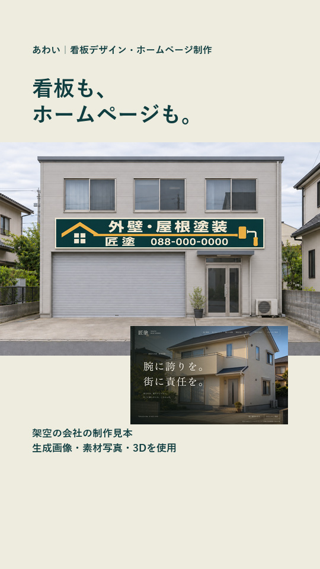
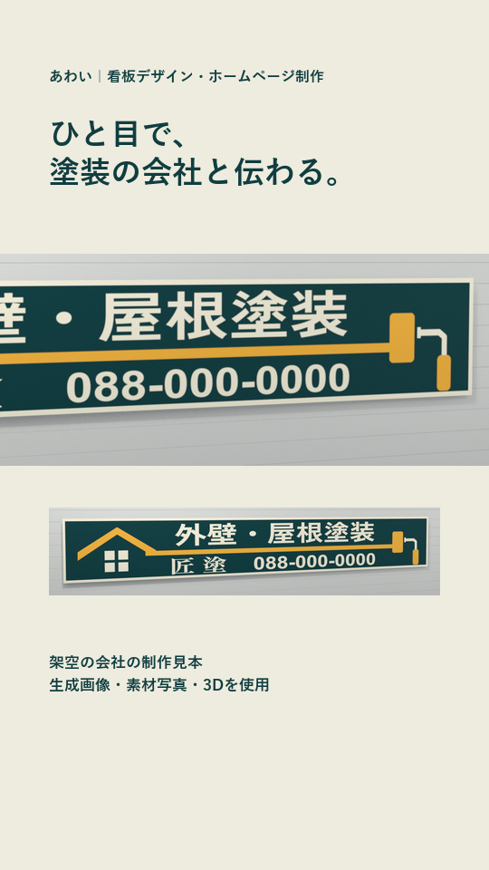
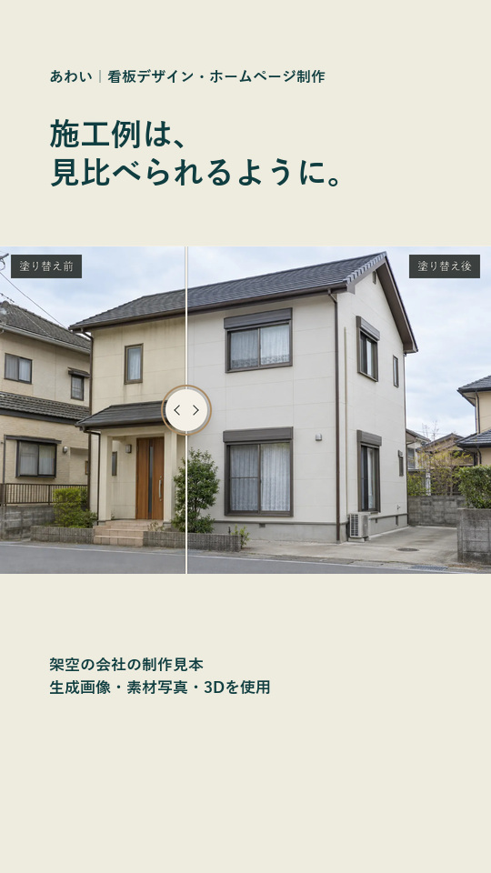
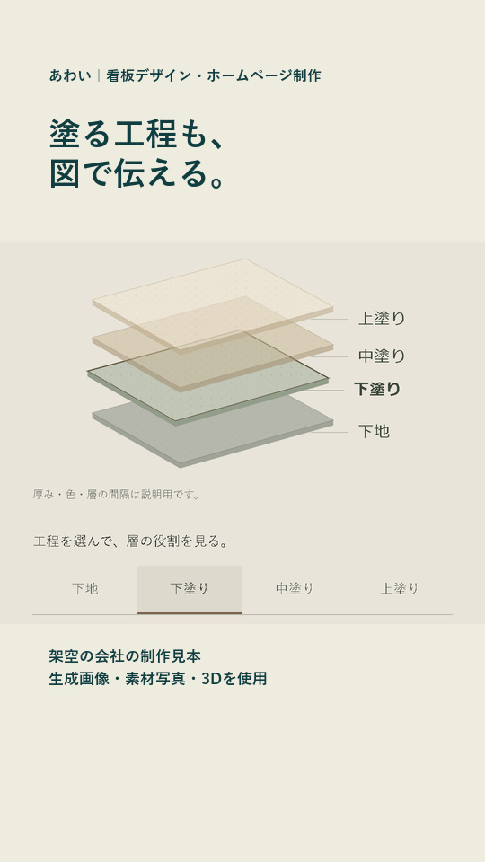
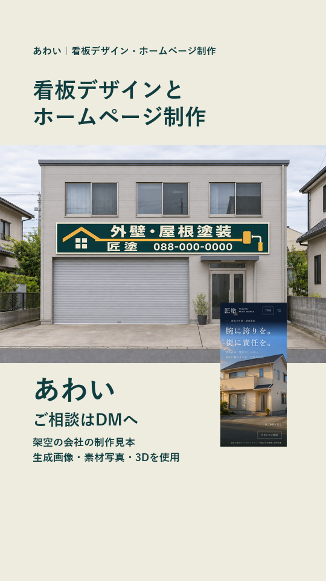

あわい｜看板デザイン・ホームページ制作
看板とサイトを一緒に見せる広告
構成と声の確認用｜まだ本編は作っていない
約23秒の5場面案です。秒数は目安です。以下の画像は、各場面の代表カットを示す縦の絵コンテです。この構成と声で進めてよいかをご確認ください。
5場面の一覧画像を見る
01｜0〜4秒（目安）

画像を拡大する
- 声
- 看板デザインも、ホームページも。
- 映す物
- 建物と看板の設置イメージを大きく表示。建物全体と、付いている看板を両方見せる。サイトの画面も小さく添え、最初から二つの制作物が分かるようにする。
- 動き
- 看板へゆっくり寄り、次の3Dの看板へ視線をつなぐ。
02｜4〜10秒（目安）

画像を拡大する
- 声
- 看板は、絵と大きな字で塗装の会社と分かるように。
- 映す物
- Blenderの看板。絵コンテではローラーと業種名の寄りを示す。板は普通の長方形、絵は平面の印刷。
- 動き
- 斜めからローラーと文字へ寄った後、正面の全体へ戻す。広告用の縦画面に合わせてカメラを組み直す。既存6秒の横長映像を、そのまま小さく載せる構成にはしない。
03｜10〜15秒（目安）

画像を拡大する
- 声
- サイトでは、施工例を比べられるように。
- 映す物
- サイトのトップを短く見せてから、同じ家の施工前後を比較する実画面へ。
- 動き
- 写真の境目を動かし、外壁の色の変化を見せる。サイトの実操作素材を使う。
04｜15〜18秒（目安）

画像を拡大する
- 声
- 塗る工程も、図で見せます。
- 映す物
- サイトにある下地・下塗り・中塗り・上塗りの図を大きく表示。
- 動き
- 工程を一つ選び、図の強調と説明が切り替わるところを見せる。
05｜18〜23秒（目安）

画像を拡大する
- 声
- ご相談は、あわいのDMへ。
- 映す物
- 建物と看板の写真へ戻り、同じ会社のサイト画面も一緒に見せる。『あわい』『ご相談はDMへ』を表示。
- 動き
- 写真とサイトの画面がそろった状態で、最後は2秒以上読めるように保つ。